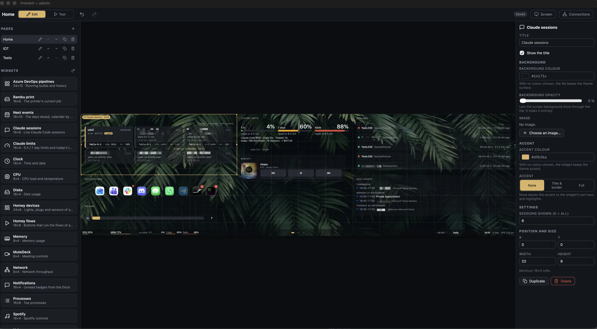
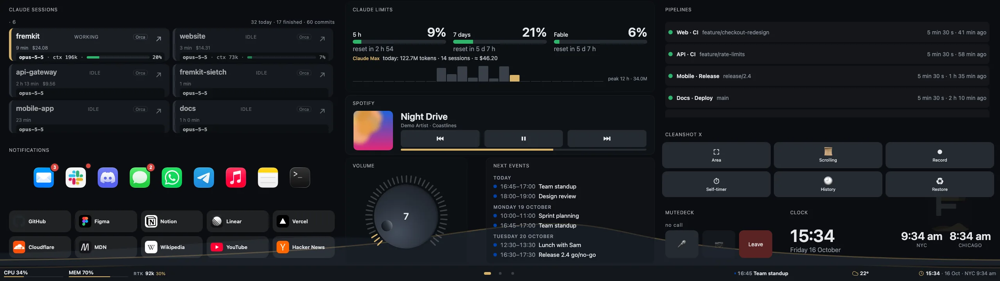
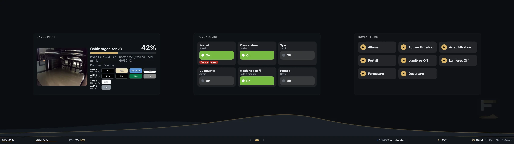
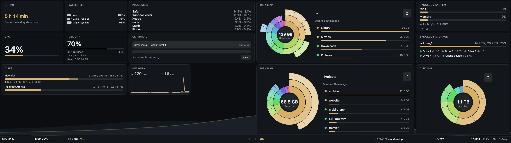
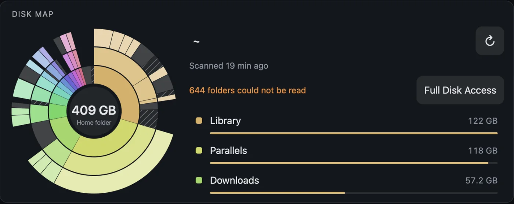
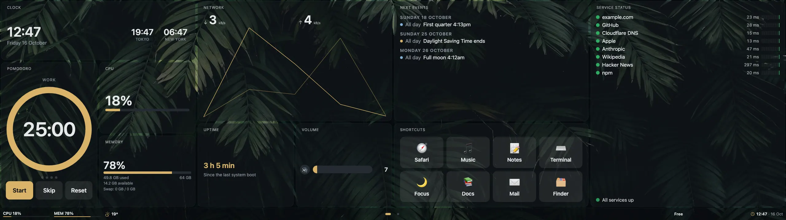
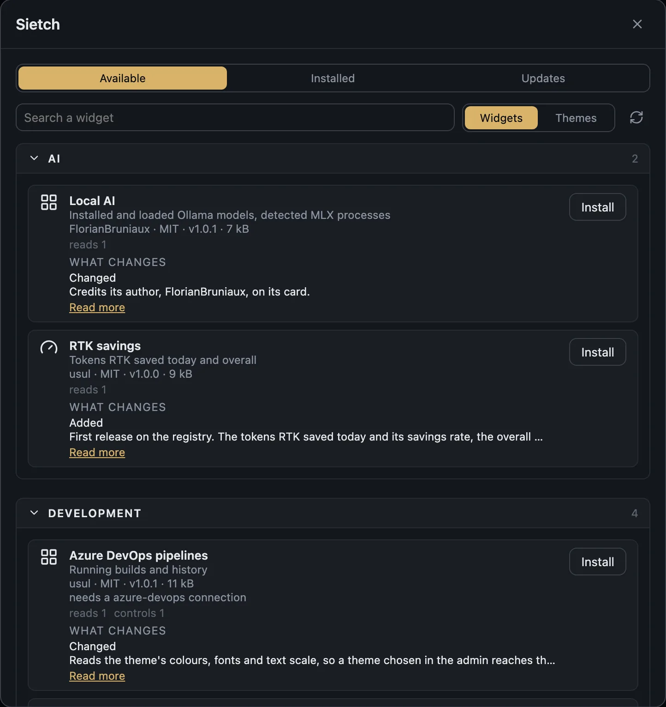

EDITOR
The real page, live, under your mouse.
The middle of the admin is the dashboard itself, with live widgets. Drag and resize with snapping, overlap refused, keyboard nudges, undo and redo. Everything saves on its own.
Widget dashboard for the Corsair Xeneon Edge · macOS
Fremkit turns the Xeneon Edge, a 2560 × 720 touch strip, into a dashboard for your Mac: builds, calendar, printer, smart home, Claude Code. No iCUE, no driver, no account.
brew install --cask fdussert/fremkit/fremkit
Free and open source · MIT · macOS 13+ on Apple silicon



Recorded on the dashboard itself, at the Edge's 2560 × 720, with sample data. The ring marks where the finger lands.
How it works
Nothing from Corsair runs. A small native helper owns the touch panel, a local server feeds the widgets, and your browser is the editor.
A menu bar app reads the Edge's touch reports over USB HID with its own driver, fences the mouse out of the strip and shows the dashboard in a kiosk window.
It listens on 127.0.0.1 only, polls what the widgets need (your Mac, your calendar, your printer) and pushes it over a WebSocket.
The admin shows the real page with live widgets. Drag, resize, theme, and it saves itself.
Swipe between pages, press buttons, open a compact widget into a full popover, all with a finger.
What it does

EDITOR
The middle of the admin is the dashboard itself, with live widgets. Drag and resize with snapping, overlap refused, keyboard nudges, undo and redo. Everything saves on its own.
NAVIGATION BAR
The bar under every page holds small widgets. Touch one and it opens full size in a popover.
TOUCH
No iCUE, no third-party driver, no kernel extension. The helper reads the panel itself and keeps your mouse out of the strip.

DISK MAP
A small Swift scanner shipped with the app walks your home folder or a volume when you ask, never on a timer. Tap a ring to go down a level, long press to show it in the Finder. Nothing is ever deleted.
SIETCH
Install widgets and themes from a curated registry. You see what each one may touch, and an update that wants more asks again.
BACKUP
One zip holds the whole dashboard and never a secret. Restore it on the same Mac and everything works at once.

THEMES
Palette, fonts and text size, worn by the dashboard, the editor and every widget. Pick one, or write your own.
Widgets
Widgets that work on any Mac ship with Fremkit. Those that need a printer, a hub, a NAS or an account live on the Sietch, our registry, and install from the admin.
Every card says who wrote it, what it reads and what changed in the last version, before you press Install.

The Sietch list is read live from the registry.
Privacy
A dashboard of your own machine reads things that belong to you. These hold for every release.
The server listens on 127.0.0.1. Nothing on your network, let alone the internet, can reach it.
Tokens and passwords go to the macOS keychain. They are never returned by the API, never logged, never in a backup.
Fremkit talks only to the services you configured. There is nothing to sign up for.
Each widget runs in a sandboxed frame and gets only the channels and connections it declared, and you accepted.
The full list of what Fremkit reads on your Mac is in the README.
Build a widget
A manifest and an HTML page. No build step, no framework. The host injects a small SDK, your theme and the data you subscribed to.
{
"id": "uptime",
"name": { "fr": "Uptime", "en": "Uptime" },
"version": "1.0.0",
"category": "system",
"minSize": [8, 4],
"subscriptions": ["system"]
}<div id="value"></div>
<script>
// Fremkit is injected by the host
Fremkit.subscribe('system', function (snap) {
var h = Math.floor(snap.uptimeSeconds / 3600)
value.textContent = h + ' h'
})
</script>Install
brew install --cask fdussert/fremkit/fremkitHomebrew cask · no Node, no Xcode tools
$ brew install --cask fdussert/fremkit/fremkit
==> Tapping fdussert/fremkit
==> Downloading Fremkit-0.4.1.dmg
==> Installing Cask fremkit
==> Moving App 'Fremkit.app' to '/Applications/Fremkit.app'
🍺 fremkit was successfully installed!# clone and set up
$ git clone https://github.com/fdussert/fremkit.git
$ cd fremkit
$ pnpm setup
✓ prerequisites ✓ dependencies ✓ UI · server
✓ signing identity ✓ helper installed in ~/ApplicationsFAQ
No. Everything except the touch driver works on any display, and the admin runs in any browser on the Mac.
No. The panel takes a single owner. Fremkit replaces iCUE and Touchscreen Gestures for the Edge rather than sitting beside them.
Not today. Fremkit targets macOS 13 or later on Apple silicon.
By itself, through Sparkle: each update is signed by the project, and Check for Updates… in the menu bar menu asks right away. Your dashboard, connections and backgrounds live in ~/Library/Application Support/Fremkit, so an update or a reinstall keeps them.
It is the Fremen survival kit from Dune. The registry is the Sietch, for the same reason.
Clone it, run one command, and put the things you keep checking where a glance is enough.